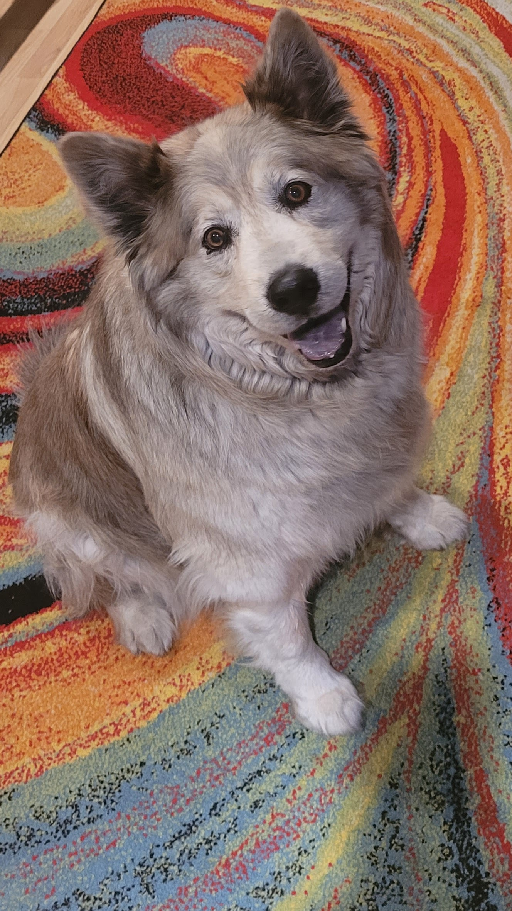
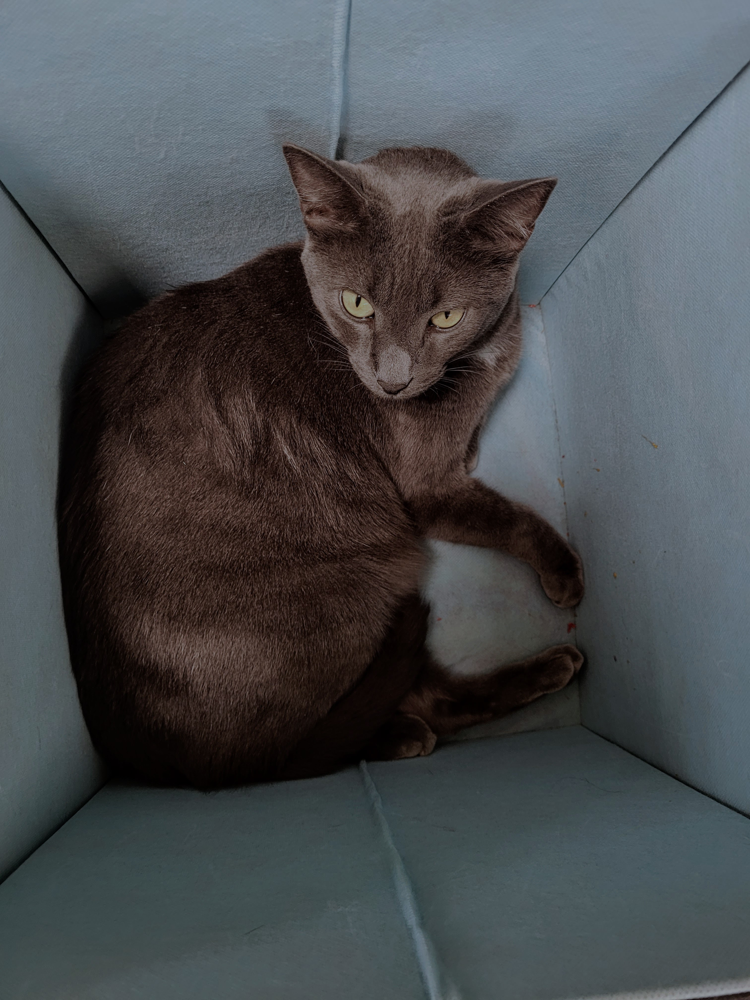
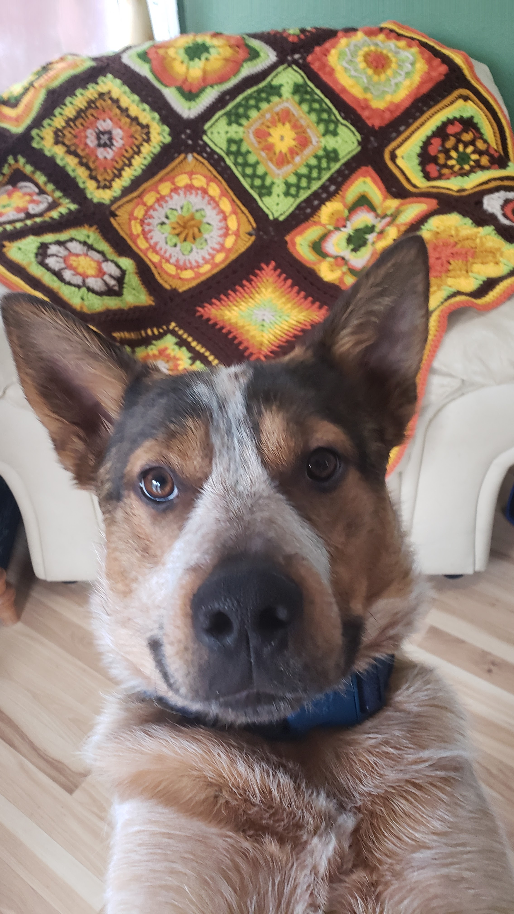

About Me
Hi! My name is Tish. I have lived in Utah most of my life, but have ventured to live in Idaho and Alaska for some short periods of time. I have some experience in SEO. Working for a company that provided the service to small local companies. I work at the Remote Encoding Center for the USPS as a data conversion clerk. We decipher and code addresses and names that the computers are not able to read (like cursive). I love to create. I have crocheted for 20+ years, and I am ready to start creating digitally. When I'm not creating, I like to disc golf, spend time with my dogs, and travel. Feel free to check out my works, and be sure to check back often for all my new projects. I plan on there being many!
  Featured Work
SEO Page

Setting up a business for online presence
CSS Cheatsheet

commands to remember
Crocheted Images